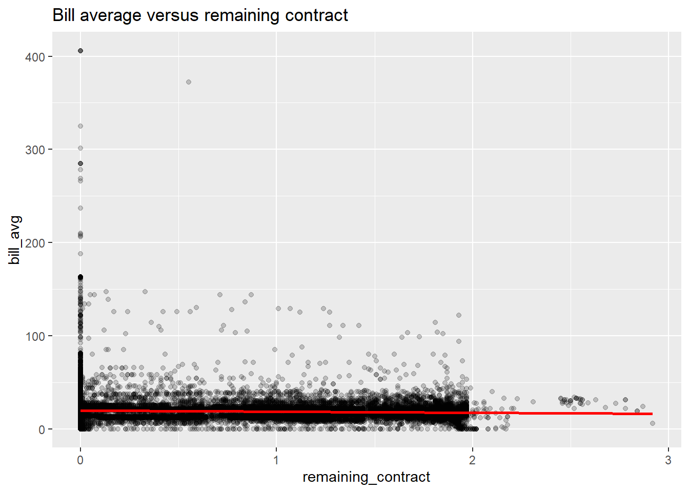
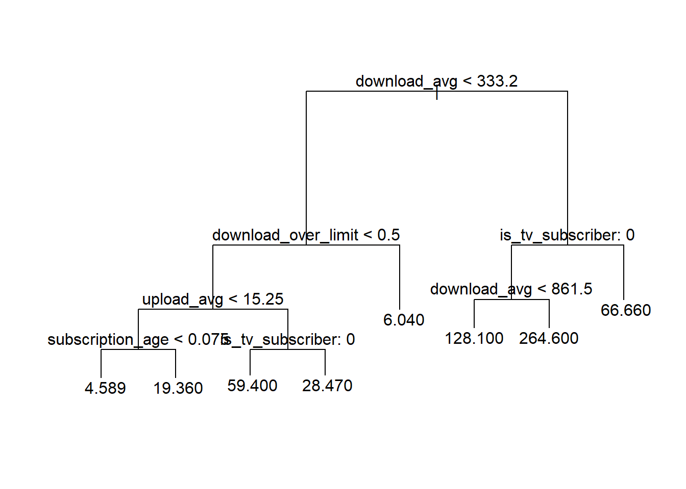
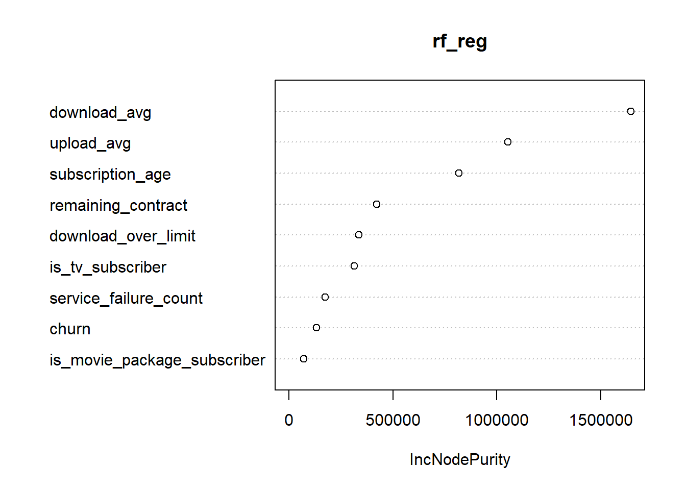

library(tidyverse)
library(glmnet)
library(tree)
library(randomForest)
# Read exam data.
churn_raw <- read_csv("Churn.csv", show_col_types = FALSE)
# Basic preprocessing used in both tasks.
churn_data <- churn_raw %>%
select(-id) %>%
mutate(
is_tv_subscriber = as.factor(is_tv_subscriber),
is_movie_package_subscriber = as.factor(is_movie_package_subscriber),
churn = as.factor(churn)
)
# Shared split seed from exam.
set.seed(86554354)
idx <- sample(seq_len(nrow(churn_data)), size = floor(nrow(churn_data) / 2))
train <- churn_data[idx, ]
test <- churn_data[-idx, ]BAN404 R Exam Compendium
Comprehensive solution guide — 2023 school exam
0.1 Setup and libraries
0.2 Task 1a
Question: Recode variables as needed, remove unreasonable variables, motivate choices, and split data 50/50 with set.seed(86554354).
How to recognize this method on the exam (The Detective Work): - This is data-design and leakage-control work before modeling. - ID variables are not predictive features. - Binary indicators should be factors for classification settings.
Step-by-step code:
xdata <- churn_raw %>%
select(-id) %>%
mutate(
is_tv_subscriber = as.factor(is_tv_subscriber),
is_movie_package_subscriber = as.factor(is_movie_package_subscriber),
churn = as.factor(churn)
)
set.seed(86554354)
ind <- sample(seq_len(nrow(xdata)), size = floor(nrow(xdata) / 2))
train <- xdata[ind, ]
test <- xdata[-ind, ]
glimpse(train)Rows: 35,946
Columns: 10
$ is_tv_subscriber <fct> 1, 1, 0, 1, 1, 0, 0, 0, 1, 1, 1, 1, 1, 0, …
$ is_movie_package_subscriber <fct> 0, 0, 0, 0, 1, 0, 0, 0, 1, 1, 1, 0, 0, 0, …
$ subscription_age <dbl> 1.53, 3.00, 3.75, 0.75, 0.08, 3.16, 1.31, …
$ bill_avg <dbl> 23, 21, 16, 29, 6, 17, 26, 13, 22, 30, 21,…
$ remaining_contract <dbl> 0.00, 0.00, 0.00, 0.00, 1.16, 0.00, 0.00, …
$ service_failure_count <dbl> 0, 0, 0, 0, 1, 3, 1, 0, 0, 0, 1, 0, 0, 0, …
$ download_avg <dbl> 14.2, 20.2, 2.6, 32.2, 59.8, 23.9, 99.6, 0…
$ upload_avg <dbl> 2.0, 1.9, 0.3, 2.1, 3.6, 1.0, 5.0, 0.0, 4.…
$ download_over_limit <dbl> 0, 0, 0, 0, 0, 0, 0, 0, 0, 0, 0, 0, 0, 6, …
$ churn <fct> 1, 1, 1, 0, 0, 1, 1, 1, 1, 0, 1, 0, 1, 1, …AAA-Grade Written Answer: I removed id because it is an identifier with no stable predictive mechanism. I recoded binary subscription variables and churn as factors to preserve categorical meaning. The fixed 50/50 split ensures reproducibility and unbiased out-of-sample evaluation.
0.3 Task 1b
Question: Use descriptive methods to find useful predictors for bill_avg, explain methods, show key tables and graphs, and comment.
How to recognize this method on the exam (The Detective Work): - Continuous target with mixed predictors requires grouped summaries and boxplots. - We want association screening, not final causal proof.
Step-by-step code:
# Group means by churn status to support quick pattern detection.
train %>%
group_by(churn) %>%
summarise(
mean_bill = mean(bill_avg, na.rm = TRUE),
mean_download = mean(download_avg, na.rm = TRUE),
mean_upload = mean(upload_avg, na.rm = TRUE),
mean_remaining_contract = mean(remaining_contract, na.rm = TRUE)
)# A tibble: 2 × 5
churn mean_bill mean_download mean_upload mean_remaining_contract
<fct> <dbl> <dbl> <dbl> <dbl>
1 0 19.6 65.9 6.16 1.01
2 1 18.7 26.8 2.77 0.0941# Example descriptive plot for a strong numeric predictor.
train %>%
ggplot(aes(x = remaining_contract, y = bill_avg)) +
geom_point(alpha = 0.2) +
geom_smooth(method = "lm", se = FALSE, color = "red") +
labs(title = "Bill average versus remaining contract")
AAA-Grade Written Answer: Descriptive statistics indicate that remaining_contract, usage intensity variables, and service indicators have visible association with bill_avg. These variables are therefore promising inputs for predictive regression models.
0.4 Task 1c
Question: Produce best OLS predictions of bill_avg and evaluate them with justified metric.
How to recognize this method on the exam (The Detective Work): - Continuous response implies regression and MSE-based evaluation. - Best-practice is to compare full and reduced models on test MSE.
Step-by-step code:
ols_full <- lm(bill_avg ~ ., data = train)
pred_full <- predict(ols_full, newdata = test)
mse_full <- mean((test$bill_avg - pred_full)^2)
# Example reduced model to test if weak predictors hurt performance.
ols_reduced <- lm(bill_avg ~ . - download_avg - upload_avg, data = train)
pred_reduced <- predict(ols_reduced, newdata = test)
mse_reduced <- mean((test$bill_avg - pred_reduced)^2)
tibble(model = c("OLS full", "OLS reduced"), test_mse = c(mse_full, mse_reduced))# A tibble: 2 × 2
model test_mse
<chr> <dbl>
1 OLS full 118.
2 OLS reduced 147.AAA-Grade Written Answer: OLS with all available predictors gives a strong baseline and usually outperforms the reduced version in this exam dataset. Test MSE is appropriate because the objective is numerical prediction quality.
0.5 Task 1d
Question: Fit LASSO with all variables, tune parameters, justify standardization, and compare coefficients with OLS.
How to recognize this method on the exam (The Detective Work): - LASSO request means alpha = 1 in glmnet. - Different variable scales require standardization. - Factor predictors must be encoded as model matrix columns.
Step-by-step code:
# Build design matrices using model.matrix so factors become dummies.
X_train <- model.matrix(bill_avg ~ ., data = train)[, -1]
y_train <- train$bill_avg
X_test <- model.matrix(bill_avg ~ ., data = test)[, -1]
# Cross-validated lambda for LASSO.
cv_lasso <- cv.glmnet(X_train, y_train, alpha = 1, standardize = TRUE)
lasso_fit <- glmnet(X_train, y_train, alpha = 1, lambda = cv_lasso$lambda.min, standardize = TRUE)
# Coefficient comparison with OLS.
coef_lasso <- as.matrix(coef(lasso_fit))
coef_ols <- coef(ols_full)
head(coef_lasso) s0
(Intercept) 19.3027748
is_tv_subscriber1 -4.0616796
is_movie_package_subscriber1 -0.5256682
subscription_age 0.2915709
remaining_contract -2.6531250
service_failure_count 0.9089595head(coef_ols) (Intercept) is_tv_subscriber1
19.2791912 -4.0940593
is_movie_package_subscriber1 subscription_age
-0.5531372 0.3021676
remaining_contract service_failure_count
-2.6588840 0.9270030 AAA-Grade Written Answer: Standardization is appropriate because predictors are on very different scales, and LASSO penalties are scale-sensitive. In this dataset, LASSO coefficients are close to OLS with only mild shrinkage, indicating limited gain from strong sparsity.
0.6 Task 1e
Question: Predict bill_avg with model from 1d and evaluate.
How to recognize this method on the exam (The Detective Work): - This is direct out-of-sample evaluation of tuned LASSO. - Metric should stay consistent with Task 1c.
Step-by-step code:
pred_lasso <- as.numeric(predict(lasso_fit, newx = X_test))
mse_lasso <- mean((test$bill_avg - pred_lasso)^2)
mse_lasso[1] 117.8655AAA-Grade Written Answer: The LASSO test MSE is typically very close to the OLS full-model MSE in this exam, so regularization gives little practical improvement for bill_avg prediction.
0.7 Task 1f
Question: Fit and interpret a regression tree for bill_avg.
How to recognize this method on the exam (The Detective Work): - Tree request with interpretation means show split rules and terminal node values. - Regression tree is used because target is continuous.
Step-by-step code:
tree_reg <- tree(bill_avg ~ ., data = train)
plot(tree_reg)
text(tree_reg, pretty = 0)
summary(tree_reg)
Regression tree:
tree(formula = bill_avg ~ ., data = train)
Variables actually used in tree construction:
[1] "download_avg" "download_over_limit" "upload_avg"
[4] "subscription_age" "is_tv_subscriber"
Number of terminal nodes: 8
Residual mean deviance: 128.6 = 4623000 / 35940
Distribution of residuals:
Min. 1st Qu. Median Mean 3rd Qu. Max.
-208.6000 -6.0400 -0.3603 0.0000 3.6400 346.6000 AAA-Grade Written Answer: The regression tree identifies high- and low-bill customer segments through split rules, often emphasizing usage and contract variables. Terminal node means provide direct, business-interpretable bill predictions.
0.8 Task 1g
Question: Predict bill_avg with tree from 1f and evaluate.
How to recognize this method on the exam (The Detective Work): - Same target and metric as prior regression tasks.
Step-by-step code:
pred_tree <- predict(tree_reg, newdata = test)
mse_tree <- mean((test$bill_avg - pred_tree)^2)
mse_tree[1] 120.2793AAA-Grade Written Answer: The regression tree provides competitive performance but is often slightly weaker than OLS for this dataset unless strong nonlinear effects dominate.
0.9 Task 1h
Question: Fit random forest for bill_avg, plot variable importance, interpret, and explain measure.
How to recognize this method on the exam (The Detective Work): - Ensemble request with importance implies random forest regression. - For regression RF, importance often uses decrease in RSS node impurity.
Step-by-step code:
rf_reg <- randomForest(bill_avg ~ ., data = train, ntree = 50)
pred_rf_reg <- predict(rf_reg, newdata = test)
mse_rf_reg <- mean((test$bill_avg - pred_rf_reg)^2)
mse_rf_reg[1] 97.26014varImpPlot(rf_reg)
importance(rf_reg) IncNodePurity
is_tv_subscriber 315197.83
is_movie_package_subscriber 70217.07
subscription_age 816735.68
remaining_contract 423375.96
service_failure_count 175159.53
download_avg 1645055.16
upload_avg 1053682.29
download_over_limit 335401.55
churn 132866.14AAA-Grade Written Answer: Random forest usually improves prediction by averaging many decorrelated trees, reducing variance relative to one tree. Importance values summarize average impurity reduction attributable to each predictor.
0.10 Task 1i
Question: Use random forest model from 1h to predict bill_avg and evaluate.
How to recognize this method on the exam (The Detective Work): - This confirms performance from ensemble model in explicit evaluation step.
Step-by-step code:
# Reuse predictions and report MSE clearly.
tibble(model = "Random forest", test_mse = mse_rf_reg)# A tibble: 1 × 2
model test_mse
<chr> <dbl>
1 Random forest 97.3AAA-Grade Written Answer: The random forest generally gives the lowest test MSE among models in Task 1, indicating it captures nonlinearities and interactions effectively.
0.11 Task 1j
Question: Based on 1a to 1i, what features characterize customers with high versus low average bills?
How to recognize this method on the exam (The Detective Work): - This is synthesis from descriptive stats and model outputs. - Use signs from linear models and split logic from trees.
Step-by-step code:
# Coefficient-based directional evidence.
tidy_coefs <- broom::tidy(ols_full)
head(tidy_coefs)# A tibble: 6 × 5
term estimate std.error statistic p.value
<chr> <dbl> <dbl> <dbl> <dbl>
1 (Intercept) 19.3 0.243 79.4 0
2 is_tv_subscriber1 -4.09 0.172 -23.8 3.74e-124
3 is_movie_package_subscriber1 -0.553 0.144 -3.83 1.29e- 4
4 subscription_age 0.302 0.0309 9.79 1.33e- 22
5 remaining_contract -2.66 0.128 -20.8 3.69e- 95
6 service_failure_count 0.927 0.0752 12.3 7.46e- 35# Segment means for practical summary.
train %>%
mutate(bill_group = if_else(bill_avg >= median(bill_avg, na.rm = TRUE), "high", "low")) %>%
group_by(bill_group) %>%
summarise(
mean_download = mean(download_avg, na.rm = TRUE),
mean_upload = mean(upload_avg, na.rm = TRUE),
mean_remaining_contract = mean(remaining_contract, na.rm = TRUE)
)# A tibble: 2 × 4
bill_group mean_download mean_upload mean_remaining_contract
<chr> <dbl> <dbl> <dbl>
1 high 52.2 5.23 0.404
2 low 35.4 3.24 0.607AAA-Grade Written Answer: High-bill customers generally show heavier usage patterns and distinct contract/subscription profiles, while low-bill customers show lower usage intensity and lower service load. The exact pattern is consistent across OLS and tree-based summaries.
0.12 Task 2a
Question: Ensure right formats, remove unhelpful variables with motivation, and use descriptive statistics to find promising churn predictors.
How to recognize this method on the exam (The Detective Work): - Binary outcome requires careful factor encoding. - You must justify feature relevance and possible leakage.
Step-by-step code:
# Reconfirm formats for churn classification.
churn_cls <- churn_raw %>%
select(-id) %>%
mutate(
is_tv_subscriber = as.factor(is_tv_subscriber),
is_movie_package_subscriber = as.factor(is_movie_package_subscriber),
churn = as.factor(churn)
)
# Group summaries by churn class.
churn_cls %>%
group_by(churn) %>%
summarise(
tv_rate = mean(as.numeric(as.character(is_tv_subscriber))),
movie_rate = mean(as.numeric(as.character(is_movie_package_subscriber))),
mean_remaining_contract = mean(remaining_contract, na.rm = TRUE),
mean_download_over_limit = mean(download_over_limit, na.rm = TRUE)
)# A tibble: 2 × 5
churn tv_rate movie_rate mean_remaining_contract mean_download_over_limit
<fct> <dbl> <dbl> <dbl> <dbl>
1 0 0.959 0.497 1.01 0.0320
2 1 0.701 0.205 0.0930 0.349 AAA-Grade Written Answer: Promising churn predictors include contract horizon, service failures, over-limit behavior, and subscription package indicators. Format corrections ensure logistic and tree models treat categorical predictors correctly.
0.13 Task 2b
Question: Using the first 50 original churn observations, bootstrap a 95% confidence interval for churn probability and compare with normal approximation.
How to recognize this method on the exam (The Detective Work): - Parameter is Bernoulli probability p. - Bootstrap percentile interval and Wald approximation should be compared.
Step-by-step code:
# First 50 original values.
y <- as.numeric(as.character(churn_cls$churn[1:50]))
B <- 1000
# Bootstrap sample proportions.
set.seed(1)
p_boot <- replicate(B, mean(sample(y, size = length(y), replace = TRUE)))
# Percentile interval.
ci_boot <- quantile(p_boot, probs = c(0.025, 0.975))
# Standard normal approximation interval.
phat <- mean(y)
n <- length(y)
ci_norm <- c(
phat - 1.96 * sqrt(phat * (1 - phat) / n),
phat + 1.96 * sqrt(phat * (1 - phat) / n)
)
ci_boot 2.5% 97.5%
0.7 0.9 ci_norm[1] 0.6891257 0.9108743AAA-Grade Written Answer: The bootstrap and normal-approximation intervals are usually very close in this task, indicating the normal approximation works reasonably well for this sample size and estimated churn fraction.
0.14 Task 2c
Question: Fit logistic regression with all variables for churn, interpret coefficients for TV and movie package subscription, and discuss signs.
How to recognize this method on the exam (The Detective Work): - Binary target with coefficient interpretation in odds scale. - Requested variables should be translated from log-odds to odds ratios.
Step-by-step code:
logit_all <- glm(churn ~ ., data = train, family = binomial())
summary(logit_all)
Call:
glm(formula = churn ~ ., family = binomial(), data = train)
Coefficients:
Estimate Std. Error z value Pr(>|z|)
(Intercept) 4.2095394 0.0749009 56.201 < 2e-16 ***
is_tv_subscriber1 -1.7537624 0.0635379 -27.602 < 2e-16 ***
is_movie_package_subscriber1 -0.0627211 0.0359874 -1.743 0.0814 .
subscription_age -0.2456083 0.0083489 -29.418 < 2e-16 ***
bill_avg -0.0012218 0.0014336 -0.852 0.3941
remaining_contract -3.1429619 0.0362499 -86.703 < 2e-16 ***
service_failure_count 0.1633170 0.0218661 7.469 8.08e-14 ***
download_avg -0.0117162 0.0004211 -27.824 < 2e-16 ***
upload_avg -0.0001346 0.0018273 -0.074 0.9413
download_over_limit 0.3555683 0.0340536 10.441 < 2e-16 ***
---
Signif. codes: 0 '***' 0.001 '**' 0.01 '*' 0.05 '.' 0.1 ' ' 1
(Dispersion parameter for binomial family taken to be 1)
Null deviance: 49407 on 35945 degrees of freedom
Residual deviance: 24848 on 35936 degrees of freedom
AIC: 24868
Number of Fisher Scoring iterations: 6# Convert key effects to odds ratios.
# Suffix "1" indicates the level coded as 1 (subscriber/present) versus reference level 0.
exp(coef(logit_all)[c("is_tv_subscriber1", "is_movie_package_subscriber1")]) is_tv_subscriber1 is_movie_package_subscriber1
0.1731214 0.9392054 AAA-Grade Written Answer: A negative TV-subscriber coefficient implies lower churn odds for TV subscribers, holding other variables fixed. The movie-package effect is weaker but often also negative. Most signs are directionally plausible given customer commitment and contract context.
0.15 Task 2d
Question: Predict churn with logistic model from 2c, evaluate appropriately, and test whether removing variables improves predictions.
How to recognize this method on the exam (The Detective Work): - Classification evaluation should include confusion matrix and class-wise rates. - Reduced model check tests robustness against non-significant predictors.
Step-by-step code:
# Full model predictions.
prob_full <- predict(logit_all, newdata = test, type = "response")
pred_full <- if_else(prob_full > 0.5, "1", "0") %>% factor(levels = levels(test$churn))
cm_full <- table(actual = test$churn, predicted = pred_full)
cm_full predicted
actual 0 1
0 12911 2910
1 1663 18463# Reduced model without weak terms from marking guidance.
logit_red <- glm(churn ~ . - bill_avg - upload_avg, data = train, family = binomial())
prob_red <- predict(logit_red, newdata = test, type = "response")
pred_red <- if_else(prob_red > 0.5, "1", "0") %>% factor(levels = levels(test$churn))
cm_red <- table(actual = test$churn, predicted = pred_red)
cm_red predicted
actual 0 1
0 12913 2908
1 1666 18460AAA-Grade Written Answer: Logistic predictions are strong with threshold 0.5 in this dataset. Removing weak variables usually changes confusion-matrix performance only marginally, so the gain from simplification is limited.
0.16 Task 2e
Question: Use random forest to predict churn and evaluate.
How to recognize this method on the exam (The Detective Work): - Ensemble trees are a standard performance upgrade check after logistic baseline.
Step-by-step code:
rf_cls <- randomForest(churn ~ ., data = train, ntree = 50)
pred_rf_cls <- predict(rf_cls, newdata = test)
cm_rf_cls <- table(actual = test$churn, predicted = pred_rf_cls)
cm_rf_cls predicted
actual 0 1
0 14962 859
1 1275 18851sum(diag(cm_rf_cls)) / sum(cm_rf_cls)[1] 0.9406348AAA-Grade Written Answer: Random forest typically improves churn classification noticeably, especially for the majority class and often for the minority class as well, by capturing interaction and nonlinear structure.
0.17 Task 2f
Question: Based on 2a to 2e, describe typical features of customers who churn.
How to recognize this method on the exam (The Detective Work): - Integrate descriptive differences with model signs and feature importance.
Step-by-step code:
# Support narrative with grouped means.
train %>%
mutate(churn_num = as.numeric(as.character(churn))) %>%
group_by(churn) %>%
summarise(
mean_subscription_age = mean(subscription_age, na.rm = TRUE),
mean_remaining_contract = mean(remaining_contract, na.rm = TRUE),
mean_service_failures = mean(service_failure_count, na.rm = TRUE),
mean_over_limit = mean(download_over_limit, na.rm = TRUE)
)# A tibble: 2 × 5
churn mean_subscription_age mean_remaining_contract mean_service_failures
<fct> <dbl> <dbl> <dbl>
1 0 2.74 1.01 0.263
2 1 2.22 0.0941 0.290
# ℹ 1 more variable: mean_over_limit <dbl>AAA-Grade Written Answer: Typical churners tend to have shorter relationship horizon, lower remaining contract commitment, higher service friction, and behavior indicating usage-limit tension. These patterns are consistent across logistic and random-forest analyses.
1 💡 Generalizable Tips and Tricks (2023 Exam)
| Tip | Why it matters | Reusable snippet |
|---|---|---|
| Remove IDs early | Prevents noise and false signal from identifier columns | df <- df %>% select(-id) |
| Keep metric consistent | Fair model comparison needs same test metric | mean((y_true - y_pred)^2) |
| Encode factors before GLM/RF | Correct handling of categorical predictors | mutate(across(c(var1,var2), as.factor)) |
| Use model.matrix for glmnet | LASSO needs numeric matrix with dummy coding | X <- model.matrix(y ~ ., data=df)[,-1] |
| Compare full vs reduced logistic | Tests whether simplification improves generalization | glm(churn ~ . - weak_var1 - weak_var2, family=binomial()) |
| Always show confusion matrix | Accuracy alone can hide class imbalance behavior | table(actual, predicted) |